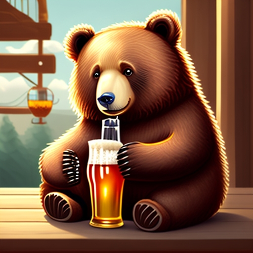

| AI drawing is the drawing that generate by AI |
| |
| |
| In June 2020, a company called OpenAI achieved a big breakthrough in AI with the creation of GPT-3, a system that can process and generate language in much more complex ways than earlier efforts. You can have conversations with it about any topic, ask it to write a research article or a story, summarise text, write a joke, and do almost any imaginable language task. |
| In 2021, some of GPT-3’s developers turned their hand to images. They trained a model on billions of pairs of images and text descriptions, then used it to generate new images from new descriptions. They called this system DALL-E, and in July 2022 they released a much-improved new version, DALL-E 2. Like GPT-3, DALL-E 2 was a major breakthrough. It can generate highly detailed images from free-form text inputs, including information about style and other abstract concepts. |
| |
| |
| Impacts and problems of ai painting |
| |
| Undoubtedly, AI tools are having a major impact on the art world. For example, they allow artists to create more complex and intricate works than ever. They are also helping artists to experiment with new styles and techniques. AI tools are also being used to create new types of art. Some artists are using AI to create completely random and unpredictable pieces. This provides artists with a whole new way of expressing themselves. |
| Artificial intelligence has been implemented in art in rudimentary ways for a while, such as some artists using models to draw from references. Today, AI-generated art poses a threat to artists as it may use other artists' work without permission, credit, or compensation to generate the art the user desires. |
| |
| |
| Examples of ai painter |
| |
| The ai painter I use is https://images.ai |
